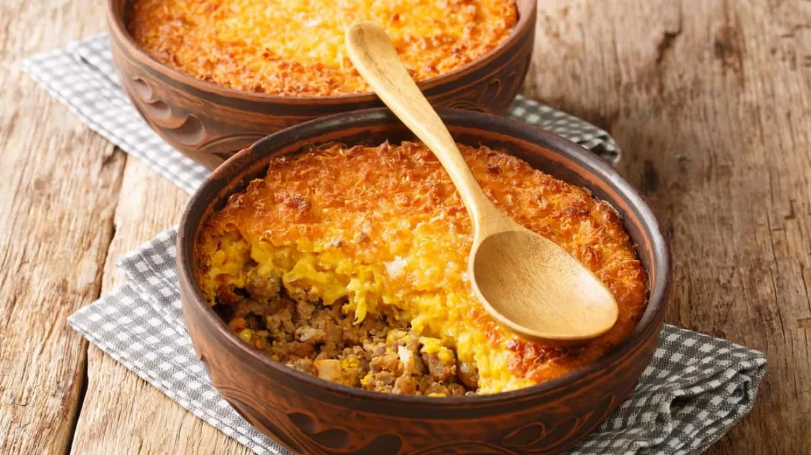

Como hacer: Pastel de Choclo
Recetas

Que es el pastel de choclo?
El pastel de choclo es un plato típico de la gastronomía chilena. Se trata de un "pastel"
que se elabora con choclo, carne, cebolla, huevo y aceitunas.
Es un plato muy sabroso y contundente, ideal para disfrutar en familia o con amigos.
Ingredientes
- choclo
- cebolla
- carne molida
- huevo
- sal
- pollo
- aceitunas
- azucar
Preparación
- Preparación de los ingredientes:
Reúne todos los ingredientes mencionados arriba para la mezcla de choclo, el relleno y para montar el pastel.
- Cocinar el choclo:
En una olla grande, hierve los granos de choclo con agua por unos 10-15 minutos hasta que estén tiernos. Si usas choclo congelado, simplemente cocina hasta que esté bien caliente. Después de cocinarlos, escúrrelos y ponlos en un procesador de alimentos o licuadora. Agrega la leche, mantequilla, azúcar, sal y pimienta. Tritura hasta obtener una mezcla cremosa, pero que aún tenga algo de textura.
- Preparar el relleno:
En una sartén grande, calienta un poco de aceite y sofríe la cebolla picada hasta que esté dorada. Agrega la carne molida (o pollo) y cocina hasta que esté completamente cocida. Añade sal, pimienta y comino al gusto. Incorpora las aceitunas, las pasas y los huevos duros picados. Cocina todo junto por unos minutos y reserva.
- Montar el pastel de choclo:
Precalienta el horno a 180°C (350°F). Engrasa un molde y coloca una capa de la mezcla de choclo triturado. Luego, agrega el relleno de carne de manera uniforme sobre la capa de choclo. Cubre con el resto del choclo, alisando la superficie. Espolvorea el queso rallado sobre la parte superior.
- Hornear y servir:
Hornea el pastel durante unos 30-40 minutos o hasta que la parte superior esté dorada y burbujeante. Deja reposar por unos minutos antes de servir. Puedes acompañarlo con una ensalada fresca o con una salsa de tu preferencia. ¡Listo! Disfruta de tu delicioso pastel de choclo.